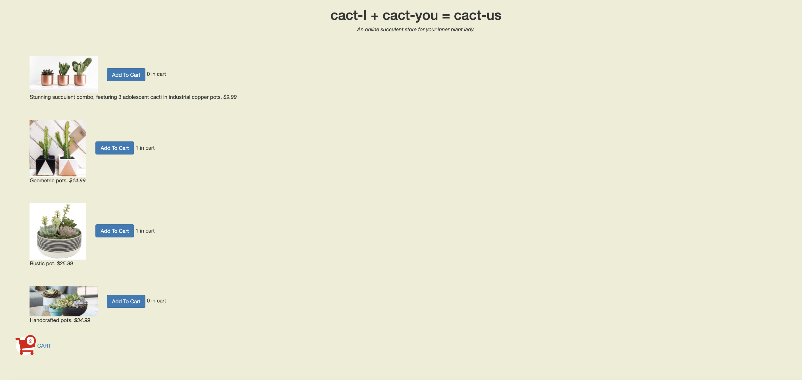

It is very common for webpages to have several variations of their page in order to see what
modifications or updates users prefer most. For example, have you and your friends had different updates
of Instagram? I have. My feed still shows the number of likes in each picture, while that of my roommate
does not. These two versions of the same page are there to test user preference and their actions.
For this project, I created two versions of a website. I then deployeed the website and sent the link
to around 40 participants.
When they clicked the link, the were directed to one of the versions randomly. Once in the website,
participants were asked to add $150
to the cart. The data was then collected in logs that registered all user interactions with the website.
The alternate version is option A, and the control is B as seen in the picture below.
A/B Testing

Context
Hypotheses
Version A

Version B

Time to Completion
Null Hypothesis:
The time to completion of version A is the same as the time to completion of version B.
Alternative:
The time to complete the task for version A would be much faster than that for version B.
This is
because the prices in version A are bigger and the names of the products are shorter. This
makes it
easier and faster to add items to the cart.
Return Rate
Null Hypothesis:
The return rate of version A will be equal to that of version B.
Alternative:
The return rate will be different between version A and version B because version B has a
better text hierarchy than that
of version A.
Data Collection and Analysis
Data Collection
To collect all the data, 40 users were asked to participate. They were given a link that when
they clicked on it, it would randomly direct them
to version A or version B of the webpage. Once they were in the webpage they were instructed to
add $150 worth of products to the cart. Many users
then went to the checkout page to check if they did reach the $150 dolar minimum limit, and if
they did not, they would go back and modify their cart.
If the user returned to the page from the cart, that was counted for the return rate. We cared
if the user returned or not, not how many times they returned.
Moreover, while the users completed the task, all their actions was recorded in logs. These logs demonstrated the time where the page loaded, if they clickd on any buttons, if they went to the checkout page, and more. These logs were then converted to a csv file to be analyzed in a spreadsheet.
Once in the spreadsheet, the Time to Completion was calculated by going manually through all the logs and looking when the user last loaded the page and substracting the initial loading time from that. Additionally, for every user, the return count was also manually calculated by counting which users returned to the page after the checkout and which did not. As stated above, what was important was if they returned or not, not how many times they returned.
Furthermore, a python script was ran with the data from the spreadsheet and the values obtained were the following:
Moreover, while the users completed the task, all their actions was recorded in logs. These logs demonstrated the time where the page loaded, if they clickd on any buttons, if they went to the checkout page, and more. These logs were then converted to a csv file to be analyzed in a spreadsheet.
Once in the spreadsheet, the Time to Completion was calculated by going manually through all the logs and looking when the user last loaded the page and substracting the initial loading time from that. Additionally, for every user, the return count was also manually calculated by counting which users returned to the page after the checkout and which did not. As stated above, what was important was if they returned or not, not how many times they returned.
Furthermore, a python script was ran with the data from the spreadsheet and the values obtained were the following:
-
T-scoreee for Time to Completion:
-0.38125016328080724 -
P-value for the test of Time to completion:
0.35362372187189156 -
Chi^2 value for the test of Return rate:
4.791111111111112 -
P-value Return Rate:
0.02860696714121902
Analysis of Results
Looking at the p-value for Time to Completion, it can be determined that the the testing failed
to reject the null. This is due to the p-value (alpha) being
more than 5%. Therefore, the test was inconclusive and did not show any significant difference
between version A and version B.
Moreover, looking at the p-value of the Return Rate, it can be determined that the testing rejected the null hypothesis. This is also because the alpha value is smaller than 5%. Therefore, the testing concludes and there is a significant difference between the return rate of version A and version B.
Moreover, looking at the p-value of the Return Rate, it can be determined that the testing rejected the null hypothesis. This is also because the alpha value is smaller than 5%. Therefore, the testing concludes and there is a significant difference between the return rate of version A and version B.
Conclusion and Take Aways
In conclusion my testing rejected the null hypothesis for return rate meaning that there was a
difference in the return rate between version A and version B.
Moreover, it failed to reject the null with the time to completion.